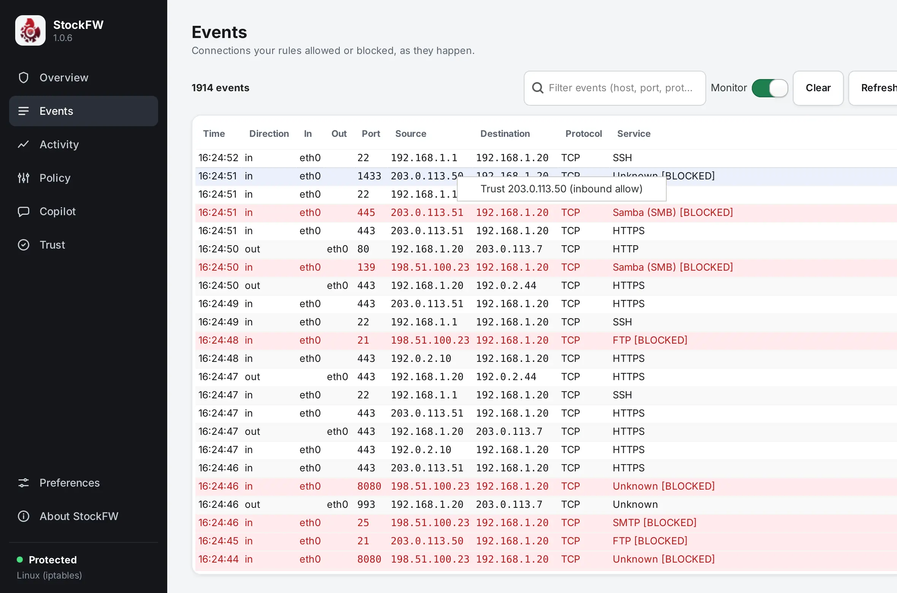

Events
Every connection the firewall allowed or blocked, as it happens. StockFW does not capture packets; it reads the verdicts your operating system already records and shows them unchanged, so each row can be checked against the system’s own log.
[[shot:events|The Events page: a count of 211 events, a filter box, the Monitor switch, Clear and Refresh, and a table of time, direction, interface, port, source, destination, protocol and service with blocked rows in red.|Blocked rows are red and carry the [BLOCKED] marker that every other part of the app keys on.]]Where the events come from#
- Windows
- The Security event log, events 5156 (the Windows Filtering Platform permitted a connection) and 5157 (it blocked one). StockFW runs
wevtutilevery five seconds, asking for at most ten new records in text form, splits and de-duplicates them, and hands them on. Each record carries the program path, both addresses, the ports, the protocol and the direction, so the Events page on Windows names the program. The audit policy that makes Windows write these events is switched on the first time the elevated app runs; see Enable monitoring. - Linux
- The kernel log. StockFW’s own rules log what they drop and reject with the prefixes
STOCKFW-DROPandSTOCKFW-REJECT, and, since 1.0.7, the first packet of each newly allowed connection withSTOCKFW-ALLOW, rate-limited to ten a second. Built for 1.0.7 The page reads those lines from the kernel ring buffer (/dev/kmsg) directly, which needs root and works on WSL, in containers and on minimal systems; lines without the prefix are ignored, so unrelated kernel messages never appear. The kernel log carries no program name, so the Program column is empty on Linux; the Overview’s connection table names programs instead. Known gap
Only the ten-record cap on Windows is a sampling limit: under a flood of thousands of connections a second, the page shows a steady sample rather than every row, by design, so the app cannot be made to freeze. The system log remains the complete archive.
The columns#
Time (the event’s own time, in local HH:MM:SS), direction (in or out), the interfaces in and out, the local port, source and destination addresses, protocol, and the service name looked up from the port, with [BLOCKED] appended on a blocked row. On Windows there is also the program. Rows are inserted newest first by their time stamp, so an event that arrives late still lands in the right place. Verified ui-hitview-smoke
Filter, Monitor, Clear, Refresh#
- Filter narrows the list as you type: a case-insensitive match against any column. The count reads “3 of 1200 events” while a filter is active, so an empty result is never mistaken for an idle firewall. Verified test_filter_match
- Monitor starts and stops reading the log. When it cannot start, because you are not root on Linux or the audit policy is off on Windows, the page says so and how to fix it instead of showing nothing.
- Clear empties the list and forgets which rows it has seen; Refresh reads again now.
An empty list always explains itself: waiting for the first event, monitoring off, or nothing matches the filter.
Repeated events and noise#
Two preferences on the Interface › Events page shape the list. Hide repeated events drops a row when the same source, port and verdict arrived a moment ago, so a port scan becomes a few rows rather than thousands. Skip events that are not for the firewall filters records the firewall subsystem did not produce. Beyond that, the list keeps the newest 2,000 rows and drops the oldest; it is a window, not an archive.
De-duplication happens three times for three reasons: the reader refuses to deliver the same record twice, the list refuses to insert the same row twice (so a monitor that is stopped and restarted does not repeat itself), and the preference above hides visually identical connections. Verified ui-hitview-smoke
Right-click: from an event to a rule#
The menu offers only what that row can express, so it can never promise a rule the policy cannot hold:
- Outbound rows: Block destination (all traffic), Allow destination (all traffic), and Block this service to the destination, where the service is taken from the row’s port.
- Inbound rows: Trust source (inbound allow), or Remove trust for this source when a trust rule for it already exists. There is no inbound-deny rule kind, because inbound is denied by default; removing the trust is what blocks the source again.

Choosing an entry opens a dialog that prints the exact rule, as it will be written to the policy file. Where the rule kind has an opposite-direction twin, the dialog also carries the Direction setting: one direction by default, or Bi-directional, which stages the twin as part of the same change. After Yes, the rule is saved (and taken back out if the save fails), the Policy page reloads, and the change is pushed through the apply gate. The result dialog distinguishes live from staged, not live yet: administrator privileges are required. Verified test_eventrule_builders
Allowing a destination also lifts any block Sentinel staged for it, before the allow is pushed, so the two reach the firewall together; on Windows a block rule outranks an allow, so without this your Allow would have changed nothing on the wire. Verified fs-copilot-smoke
What else reads the events#
The Activity page counts exactly the rows this page lists, after its filters and duplicate check, each at its own time. The Copilot feeds every row into its per-program baselines and Sentinel’s detectors. The Overview’s counters and recent-blocks card are the same stream, summarised.